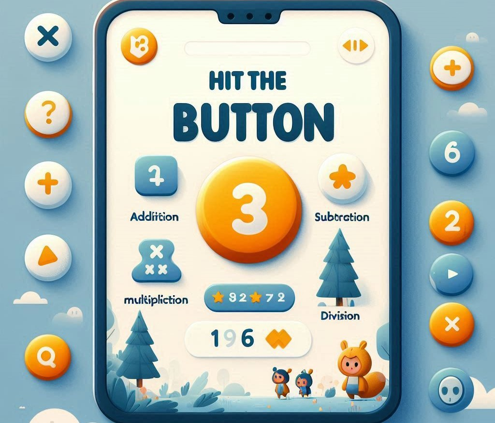

Unleashing the Power of “Hit The Button”: A Revolutionary Math Practice Game
In an era where screens are omnipresent and technology is woven into the fabric of daily life, finding educational tools that effectively engage children can be challenging. Amidst this digital landscape, “Hit The Button” has emerged as a game-changer in the realm of mathematics education. This dynamic and interactive game is capturing the attention of parents, teachers, and students alike. But what makes “Hit The Button” so special, and how does it stand out as a valuable learning resource? In this comprehensive article, we’ll explore the features, benefits, and growing popularity of “Hit The Button” and why it’s becoming a go-to tool for math practice.
What is “Hit The Button”?
“Hit The Button” is an online maths practice game designed for primary school students. Its simplicity and engaging gameplay make it a favorite among young learners. As a quick fire maths practice game, it is hosted on various educational websites and platforms, often free of charge, and is accessible on computers, tablets, and smartphones.
The core concept of “Hit The Button” revolves around quick-fire questions that test a student’s mathematical skills in a fun and interactive way. The game is typically divided into several categories, including:
- Times Tables: Helps students practice their multiplication tables through rapid questioning.
- Division: Focuses on division facts, reinforcing the inverse relationship between multiplication and division.
- Addition: Tests basic addition skills with a range of difficulties.
- Subtraction: Challenges students to solve subtraction problems quickly.
- Mixed Facts: Offers a combination of addition, subtraction, multiplication, and division questions.
Players are presented with a series of mathematical questions and must answer them as quickly as possible by clicking the correct answer. The faster and more accurately they respond, the higher their score. This format not only makes learning enjoyable but also enhances students' speed and accuracy in basic arithmetic.
How Does “Hit The Button” Work?
The game operates on a straightforward premise. Students are shown a mathematical question and are required to click on the correct answer from a set of multiple-choice options. The questions appear rapidly, encouraging players to think on their feet and respond quickly. This format helps students build confidence in their arithmetic abilities and provides immediate feedback on their performance.
The game’s interface is designed to be user-friendly and visually appealing. Bright colors, engaging animations, and clear instructions ensure that even young learners can navigate the game with ease. Additionally, the game’s adjustable difficulty levels allow it to cater to a wide range of skill levels, from beginners to more advanced students.
Why “Hit The Button” is Gaining Popularity
1. Enhancing Mathematical Fluency
One of the primary reasons “Hit The Button” is gaining traction is its effectiveness in improving mathematical fluency. Regular practice through the game helps students internalize basic arithmetic facts, which are crucial for more advanced mathematical concepts. The rapid-fire nature of the game encourages students to recall facts quickly and accurately, reinforcing their learning and boosting their confidence.
2. Making Learning Fun
Education experts agree that making learning enjoyable is key to maintaining students’ engagement. “Hit The Button” incorporates game mechanics that turn math practice into a fun and competitive activity. The game’s interactive nature and the immediate gratification of seeing one’s score improve keep students motivated and eager to continue practicing.
3. Accessibility and Flexibility
“Hit The Button” is easily accessible across various devices and platforms, making it a convenient tool for both classroom and home use. Its online availability means that students can practice anytime and anywhere, whether it’s during a school lesson, at home, or even on the go. This flexibility allows for consistent practice and reinforces learning outside of the classroom.
4. Instant Feedback and Progress Tracking
The game provides immediate feedback on students’ answers, allowing them to learn from their mistakes and correct them in real time. This instant feedback loop helps reinforce correct answers and clarify misconceptions. Additionally, some versions of the game offer progress tracking features, enabling teachers and parents to monitor students’ improvement over time.
5. Encouraging Healthy Competition
The competitive element of “Hit The Button” adds an extra layer of motivation. Students can challenge themselves to beat their previous scores or compete with classmates, fostering a sense of accomplishment and encouraging them to strive for better performance. This healthy competition can drive students to practice more frequently and improve their skills.
Integrating “Hit The Button” into the Classroom
Teachers are increasingly incorporating “Hit The Button” into their lesson plans to supplement traditional teaching methods. The game serves as an engaging warm-up activity, a quick review exercise, or a reward for students who have completed their work. Its adaptability makes it a valuable resource for reinforcing classroom instruction and providing additional practice.
For example, a teacher might use “Hit The Button” as a part of a math station rotation, where students spend a few minutes playing the game before moving on to other activities. This approach ensures that students receive targeted practice while also benefiting from varied learning experiences.
Tips for Parents and Educators
- Set Goals: Encourage students to set personal goals for their scores and track their progress over time. This can help motivate them to practice regularly and strive for improvement.
- Incorporate Regular Practice: Integrate “Hit The Button” into daily or weekly routines to ensure consistent practice. Short, frequent sessions are often more effective than occasional, lengthy ones.
- Balance with Other Activities: While “Hit The Button” is a valuable tool, it should be used in conjunction with other educational activities and resources. A well-rounded approach to learning will provide students with a comprehensive understanding of math concepts.
- Celebrate Achievements: Recognize and celebrate students’ achievements and improvements. Positive reinforcement can boost their confidence and enthusiasm for learning.
Conclusion
“Hit The Button” represents a significant advancement in the way we approach math education. By combining the principles of rapid response, accuracy, and interactive gameplay, this innovative game has captured the interest of students, teachers, and parents alike. Its effectiveness in enhancing mathematical fluency, making learning enjoyable, and providing accessible practice opportunities underscores its growing popularity.
As we continue to navigate the digital age, tools like “Hit The Button” offer a refreshing and engaging way to support students’ educational journeys. By harnessing the power of technology to make learning fun and effective, we can help shape a generation of confident, skilled mathematicians ready to tackle the challenges of the future.